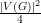
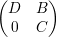
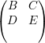

Exercício 2. Mostre que para inteiros n, p > 1, se n = (p - 1)k + r, com 0 ≤ r < p - 1, então o número de arestas no grafo de Turán é
 | (4) |
Resumo
Estas são notas de aula da disciplina optativa CI084–Tópicos em Teoria dos Grafos que foi ofertada no segundo semestre de 2005 para o Bacharelado em Ciência da Computação na UFPR. Mais informações sobre a discplina podem ser obtidas em
Aqui apresentamos os principais ferramentas da Álgebra Linear para a Teoria dos Grafos e as técnicas elementares para a análise estrutural de grafos a partir dos autovetores e autovalores da matriz de adjacências dos grafos.
Parte das notas foram redigidas pelos alunos do curso, aqui apresento-as revisada e com algumas alterações que, acredito, melhoram a apresentação. A redação das notas foram parte da avaliação e em cada seção desta nota apresento o aluno que foi o responsável pela seção. Agradeço ao empenho do alunos do curso: Ander Conselvan de Oliveira, Everson Carlos Mauda, Gustavo Baggio, Leonardo Ferreira da Silva Boiko, Luiz Alberto A Santos Jr, Renan Fischer E. Silva, Ricardo Fabiano Samila, Tiago Sak, Tiago Vignatti.
Jair
Suponha que G = Gn é um grafo de ordem n que não contenha três vértices formando um triângulo. Vamos determinar o número máximo de arestas em G.
Seja A ⊂ V (G) um conjunto independente em G de cardinalidade α(G) (máxima).
Como G não contém triângulos temos
|
| (1) |
Dessa forma
|
| (2) |
e da desigualdade entre média geométrica e média aritmética concluímos que
|
| (3) |
Assim provamos o seguinte resultado.
Teorema. Se G é um grafo sem triângulos então |E(G)|≤. ♦
Um candidato natural a grafo extremal sem K3, ou seja, um grafo sem triângulo e com o maior número possível de arestas, é o grafo bipartido completo. Suponha que A e B são partes de um grafo bipartido com |A|-|B|≥ 2. Note que transferindo um vértice de A para B temos um novo grafo bipartido com |A|-|B| arestas a mais.
Mostraremos que esse é o único grafo extremal na próxima seção.
Exercício 1. Denotamos por Kn1,n2,…,np-1 o grafo (p-1)-partido completo onde as partes têm cardinalidades n1,n2,…,np-1. Mostre que dentre os grafos (p - 1)-partidos completos com n vértices o número máximo de arestas é atingido quando |ni - nj|≤ 1 para todos i,j ∈ [p - 1].
Em 1941, Paul Turán provou que esse grafo é extremal com relação a conter Kp. Mais que isso, esse grafo é único1 com essa propriedade. Esse grafo é conhecido como de grafo de Turán
Exercício 2. Mostre que para inteiros n, p > 1, se n = (p - 1)k + r, com 0 ≤ r < p - 1, então o número de arestas no grafo de Turán é
|
| (4) |
Teorema 3. Para todos n, p > 1 o número de arestas num grafo de ordem n extremal sem Kp é dado por (4). Ainda, todo grafo extremal Gn que não contém Kp é o grafo de Turán.
Demonstração. Seja Gn um grafo extremal sem Kp. Vamos mostrar que em Gn não existem três vértices u,v,w tais que uw ∈ E(G), vu ⁄∈ E(G) e vw ⁄∈ E(G).
Suponha o contrário e vamos derivar uma contradição em dois casos. Primeiro, vamos supor que d(v) < d(u). Nesse caso removemos o vértice v, ou seja consideramos G - v = G[(V \{v}], e nesse grafo duplicamos o vértice u: o conjunto de vértices fica V (G-v) ∪{u′}, supondo que u′é um vértice novo, e ligamos u′ a todos os vértices de N(u). Esse grafo resultante tem ordem n e d(u) - d(v) arestas a mais que Gn; também (exercício) não contém Kp, um absurdo pois Gn é extremal.
Portanto d(v) ≥ d(u) e, analogamente, d(v) ≥ d(w). Nesse caso, removemos u e w do grafo G e duplicamos v em v′ e em v′′. Novamente, o grafo obtido tem mais arestas que Gn e não contém Kp, um absurdo.
Com esse fato concluímos que a relação u ~ v dada por uv ⁄∈ E(G) é de equivalência sobre V (G). Claramente, as classes de equivalência são conjuntos independentes. Do fato de Gn ser extremal concluímos que é um grafo (p - 1)-partido completo. ♦
O caso genérico de grafo extremal sem H, para um grafo H fixo, foi resolvido por
Erd s e Stone. O Teorema de Erds–Stone, algumas vezes chamado Teorema
Fundamental da Teoria Extremal de Grafos, foi provado em 1946 e diz que se n
for suficientemente grande, então um grafo de ordem n com uma fração
ρ > (p - 2)∕(p - 1) das arestas contém não só um Kp mas um Kp(t), isto é, o
grafo p-partido completo com t vértices em cada classe, para todo inteiro positivo
t.
s e Stone. O Teorema de Erds–Stone, algumas vezes chamado Teorema
Fundamental da Teoria Extremal de Grafos, foi provado em 1946 e diz que se n
for suficientemente grande, então um grafo de ordem n com uma fração
ρ > (p - 2)∕(p - 1) das arestas contém não só um Kp mas um Kp(t), isto é, o
grafo p-partido completo com t vértices em cada classe, para todo inteiro positivo
t.
Teorema. Dados inteiros p ≥ 2 e t ≥ 1 e um real 0 < ρ < 1, existe n0 > 0 tal que todo grafo com n ≥ n0 vértices e pelo menos
Em outras palavras, o número de arestas no grafo extremal é
O Teorema de Erd s–Stone tem o seguinte, bastante interessante,
corolário.
s–Stone tem o seguinte, bastante interessante,
corolário.
Corolário 1. Para todo grafo H, o número de arestas num grafo extremal sem H denotado por ex(n,H) satisfaz

Uma p-coloração dos vértices de G é uma partição V (G) = V 1 ∪V 2 ∪ ∪V p.
Se as classes V i são conjuntos independentes então dizemos que a coloração é
própria.
∪V p.
Se as classes V i são conjuntos independentes então dizemos que a coloração é
própria.
O número cromático de G é definido por
Demonstração. Dada uma χ(H)-coloração própria teremos pelo menos uma aresta entre vértices de cada par de classes de cor. Assim
Demonstração. A prova é por indução em n. Se n = 1 então o enunciado do teorema vale, trivialmente.
Seja G um grafo de ordem n e seja v um vértice qualquer. tomemos H = G - v.
Pela hipótese indutiva temos que χ(H) = k ≤ Δ(H) + 1 ≤ Δ(G) + 1. Seja {V 1,V 2,…,V k} uma coloração própria de H.
Se k < Δ(G) + 1 então {{v},V 1,…,V k}é uma coloração própria de G com ≤ Δ(G) + 1 cores.
Se k = Δ(G)+1 então existe uma cor i que não ocorre entre os vizinhos de v pois dG(v) ≤ Δ(G). Dessa forma podemos tomar a coloração própria {V 1,V 2,…,V i ∪{v},…,V k}. ♦
Um pouco mais pode ser dito em certos casos:
Teorema (teorema de Brooks). Se G não é um circuito ímpar nem um grafo completo então χ(G) ≤ Δ(G). ♦
Apesar do resultado mostrado acima, chamamos a atenção para do fato de Δ(G) - χ(G) poder ser arbitrariamente grande, como demonstra o K1,n.
Por típico, entendemos resultados do tipo: 99,9% dos grafos com 1024 vértices têm α < 22 e 99,9% dos grafos com 1024 vértices têm χ > 46. Esses enunciados serão corolários de um resultado mais geral que provaremos a seguir.
Fixamos V = [n] e definimos (n) como o conjunto de todos os grafos sobre V . Claramente |(n)| = 2N, onde N = .
Denotamos por k(n) o conjunto dos grafos G ∈(n) tais que α(G) ≥ k. Para estima a cardinalidade desse conjunto, fixamos X ⊂ [n] de cardinalidade k. Os grafos de (n) nos quais X é um conjunto independente podem ser identificados numa relação de um-para-um com os subconjuntos de V (2) \ X(2), onde X(2) é o conjunto de todas as arestas sobre X. Segue-se que
Tomando k = 
Acima, para quase todo significa que |(n)|∕|(n)|→ 1 conforme n →∞, onde é o subconjunto dos grafos que satisfazem a propriedade de interesse (no nosso caso, número de independência pequeno e número cromático alto).
Exercício 9. Por menor que seja ε > 0
Vamos assumir que as matrizes são sempre quadradas n × n a menos que seja mencionado o contrário. Denotamos por A = (ai,j) a matriz cuja entrada na i-ésima linha e j-ésima coluna é ai,j ∈ ℂ.
Um vetor v é uma matriz coluna
Dizemos que a matriz A é invertível se existe uma matriz B tal que

O traço de uma matriz é a soma dos elementos da diagonal
Esboço de uma prova. Se A é invertível então Ax = b tem única solução, a saber x = A-1b, portanto (i)⇒(ii). Pelo item (2) do exercício acima det(A)≠0, logo (i)⇒(iv).
Como Ax é uma combinação linear das colunas de A a solução trivial única significa independência linear dos vetores coluna, e vice-versa, portanto (ii) e (iii) são equivalentes.
Tome o cofator de ai,j
Pra terminar vamos mostrar que (iii)⇒(i). Considere a transformação linear
Seja A uma matriz quadrada n × n sobre ℂ. Dizemos que λ ∈ ℂ é autovalor se existe um vetor v≠0 tal que
|
| (5) |
Dizemos que v é um autovetor associado ao autovalor λ. Um autovalor de uma matriz não é único, tampouco os autovetores associados a um autovalor.
A equação (5) acima pode ser escrita na forma
O determinante det(A - λId) é um polinômio em λ denominado polinômio característico de A:
|
| (6) |
cujo grau corresponde à ordem da matriz A (ou seja, n). Portanto, a condição para a existência de autovetores associados a um autovalor λ pode ser expressa por
Pelo Teorema Fundamental da Álgebra, toda matriz possui autovalor λ ∈ ℂ. Note que se A é real e λ é real, então podemos tomar autovetores v reais.
Os autovetores associados a λ1 satisfazem
Analogamente, os autovetores associados a λ2 são
O polinômio característico pA(x) = (3 - x)2(-1 - x) admite como raízes (3,3,-1). Portanto os autovalores são λ1 = 3 com multiplicidade 2 e λ2 = -1 com multiplicidade 1.
Os autovetores associados a λ1 satisfazem
Os autovetores associados a λ2 = -1 são

Autovetores associados a λ1
Autovetores associados a λ2
A união do conjunto V λ dos autovetores associados a λ com o vetor nulo 0 define um subespaço vetorial que também denotamos por V λ. Por exemplo, se A é uma matriz real e λ1 ∈ ℝ um autovalor então
A dimensão dimV de um subespaço V é o menor número de vetores que geram o subespaço, por exemplo
Se λ é autovalor de A, então V λ = {v ∈ ℂn : Av = λv}é subespaço de ℂn (denominado auto-espaço associado a λ)
A multiplicidade geométrica de λ, mg(λ), é a dimensão do auto-espaço associado ao autovalor λ, dimV λ. A multiplicidade algébrica de λ, ma(λ), é a multiplicidade da raiz λ de pA(x) = 0, isto é, o número de fatores (x - λ) no polinômio característico da matriz.
Compare as multiplicidades nos exemplos 14 — 17 acima.
Demonstração. Sejam A matriz, λ autovalor, V λ ∈ ℂn auto-espaço e p = mg(λ) = dimV λ. Sejam {v1,v2,…,vp} ∈ V λ vetores linearmente independentes, e {v1,v2,…,vp,u1,…,un-p} o conjunto completado para uma base do ℂn. Tome a matriz

Demonstração. Seja A matriz, λ1,…,λk autovalores distintos, e v1,…,vk os respectivos autovetores.
A prova é por contradição. Seja

Lema 20. Uma matriz A é diagonalizável se, e somente se, tem n autovetores linearmente independentes.
Demonstração. Seja A matriz diagonalizável, então existe P invertível e D = diag(x1,…,xn) diagonal tal que
A condição “A diagonalizável ⇒ A tem n autovetores l.i.” é provada pelas equações abaixo:
Prova-se a recíproca considerando a matriz invertível P = (u1,…,un), onde ui são n autovetores l.i.,
Demonstração. Exercício. ♦
Seja A uma matriz quadrada n × n sobre ℝ. Dizemos que A é simétrica se
Demonstração. Seja λ um autovalor de A e v autovetor de A associado ao autovalor. Por um lado temos
Assim pelo teorema 23 daqui em diante trabalharemos somente em ℝ.
Produto Interno - Um Produto Interno é uma operação que associa a cada par de vetores u, v ∈ ℝn um número real ⟨u,v⟩, que satisfaça as seguinte condições (axiomas):
O Produto Interno canônico em ℝn é o produto escalar:
|
| (7) |
Em particular se v é um vetor em um espaço vetorial V munido de um produto interno, o comprimento desse vetor, também chamado de norma, é definido por:
|
| (8) |
Exercício 24. Deduza a partir de (1)—(4) acima as seguintes igualdades
Se ⟨u,v⟩ = 0 então dizemos que u e v são ortogonais, para quaisquer u e v diferentes de 0. Para u e v ortogonais escrevemos u ⊥ v.
Teorema 26. Se A é uma matriz simétrica então autovetores associados a autovalores distintos de A são ortogonais.
Demonstração. Sejam λ1 e λ2 autovalores distintos com respectivos autovetores u e v. Vamos mostrar ⟨u,v⟩ = uTv = 0.
Logo, temos (λ1 - λ2)uT v = 0, como λ1 - λ2≠0, pois são diferentes, temos uT v = 0, portanto u ⊥ v. ♦
Lema 27 (Desigualdade de Cauchy-Schwarz). Se u e v são dois vetores quaisquer em um espaço vetorial real V, munido de Produto Interno então:
|
| (10) |
Esboço de uma prova. Sejam u e v l.i., pois se fossem linearmente dependentes vale a igualdade na equação acima. Para todo x ∈ ℝ temos:
Exemplo 28 (Aplicação da desigualdade de Cauchy-Schwarz). Seja G um grafo sobre V = {1,2,…,n}. Suponha que G não contém triângulos. Logo para vértices i e j que formam uma aresta temos d(i) + d(j) < n. Assim
Pondo d = (d(1),d(2),…,d(n))T temos pela Desigualdade de Cauchy-Schwarz que ||d||2||1||2 ≥⟨d,1⟩2, onde 1 = (1,1,…,1)T. Portanto,
|
|
onde a última igualdade segue da soma dos graus ser duas vezes o número de arestas. Tomando os extremos da desigualdade concluímos que para um grafo G com n vértices e sem triângulos temos
Dados dois vetores u e v, vamos denotar a projeção ortogonal de v sobre u por v′. Como v′ é um múltiplo escalar do vetor u temos
|
| (12) |
para algum α ∈ ℝ.
Para determinar α:
A partir de uma base qualquer {u1,u2,…,un} do ℝn podemos obter, através de projeções ortogonais, uma base ortogonal {v1,v2,…,vn} da seguinte maneira
Uma matriz é dita ortogonal se suas colunas formam um conjunto de vetores ortonormais no ℝn. Equivalentemente, QTQ = Id, pois se Q = (q1,…,qn) temos:
Teorema 32 (Teorema espectral real). Se A é uma matriz simétrica então existe uma base ortonormal do ℝn formada por autovetores de A.
Demonstração. Este teorema será demonstrado adiante, no teorema equivalente 33. Mostre que esses teoremas são equivalentes. ♦
Teorema 33. Se A é uma matriz simétrica então existe Q ortogonal tal que QTAQ = diag(λ1,λ2,…,λn), onde λ1,λ2,…,λn são os autovalores de A.
Demonstração. A prova é por indução na dimensão da matriz A. O caso n = 1 é exercício.
Sejam λ1,λ2,…,λk autovalores distintos de A e u1,u2,…,uk autovetores linearmente independentes associados aos autovalores. Completamos {u1,u2,…,uk} para uma base {u1,u2,…,uk,uk+1,…,un} do ℝn.
Usando Gram-Schmidt, podemos tomar uma base ortonormal
Observamos que v1 é um autovetor de A. Agora tomemos Q1 como a matriz

Como B é simétrica, pois BT = (Q1TAQ1)T = Q1TAQ1, temos que A1 é simétrica e, portanto, existe Q2 ortogonal tal que Q2TA1Q2 = diag(μ1,μ2,…,μn-1) com μi autovalor de A1 para todo i.
Tomemos então Q3
Agora,

Exercício 34. Se A =  com D e C matrizes quadradas, então pA(x) = pD(x)pC(x). Conclua que os autovalores de C são autovalores de A.
Corolário 4 (Decomposição Espectral de Matrizes Simétricas). Se A é simétrica e {v1,v2,…,vn} uma base ortonormal de autovetores, então
|
| (13) |
Demonstração. Por definição ⟨Ax,x⟩ = xTAx. Pelo Teorema 33, podemos escrever A = QDQT. Portanto xTAx = xTQDQx = (QTx)TD(QTx) e fazendo y = QTx temos:

Seguindo a proposição anterior, temos o seguinte para o segundo maior autovalor de uma matriz simétrica.
Proposição 38. Seja A matriz simétrica, λ1 ≥ λ2 ≥ … ≥ λn autovalores de A com respectivos autovetores ortonormais q1,q2,…,qn. Então
Demonstração. Partindo do princípio análogo ao da proposição anterior tomamos y = QTx. De ||x|| = 1 temos ||y|| = 1 e, também do exercício 30, de temos que ⟨QTx,QTq1⟩ = ⟨x,q1⟩ = 0, ou seja, y ⊥ QTx. Ainda,
|
|
Após a resolução análoga à proposição anterior, obtemos ao invés de λ1y12 + λ2y22 + … + λnyn2 a expressão 0 + λ2y22 + λ3y32 + … + λnyn2 e como λ2 é o maior autovalor que aparece na expressão podemos afirmar
Baseado nas proposições anteriores podemos demonstrar que
Vamos mostrar um resultado mais geral.
Teorema 39 (Teorema de Courant-Fischer). Seja A uma matriz simétrica
com autovalores λ1 ≥ λ2 ≥ ≥ λn. Então
≥ λn. Então
Demonstração. Seja U um subespaço qualquer de dimensão dim = k e q1,…,qn autovetores ortonormais associados a λ1,λ2,…,λn, respectivamente.
Tomamos os subespaços V k = [q1,…,qk], e Tk = [qk+1,…,qn] e, como dimU = k temos que existe x ∈ u∩Tk-1≠{0} pois dimTk-1+dimU = n+1.
Como x ∈ Tk-1 podemos escrever x como a combinação linear
Seja Q = (q1,…,qn) a matriz ortogonal de autovetores e façamos y = QTx. Como Q preserva produto interno (exerc. 30) e
|
|
temos que
Agora, para U = V k temos, de modo análogo, que x = ∑ i=1kαiqi e
Logo,
Exercício 40 (Teorema de Courant-Fischer). Mostre que também vale o seguinte
Proposição 41 (Teorema do Entrelaçamento). Seja A = (ai,j) matriz simétrica com autovalores λ1 ≥ λ2 ≥ … ≥ λn e Ak = (ai,j)i,j≠k matriz (n - 1) × (n - 1) simétrica, com autovalores μ1 ≥ μ2 ≥… ≥ μn-1. Então
Demonstração. Vamos mostrar que λj ≥ μj ≥ λj+1 para A1. Seja U subespaço no ℝn-1 de dimensão dimU = j tal que

Para mostrar μj ≥ λj+1 para A1 usamos o exercício 40. Os detalhes ficam como exercício. ♦
Seja a matriz A = (aij) e, dada uma permutação ρ de 12…n denotamos por Aρ a matriz (aρ(i)ρ(j)).
Exemplo 42. Suponha a permutação 3214567, ou seja, ρ(1) = 3,ρ(3) = 1,ρ(i) = i(∀i≠1,3) e considere a matriz
Exercício 43. Seja P a matriz obtida da matriz identidade permutando-se as linhas de Id de acordo com ρ. Mostre que
Dizemos que a matriz A é irredutível se não existe permutação ρ tal que
Teorema 44 (Teorema de Perron-Frobenius). Seja A, simétrica, não-negativa (aij ≥ 0), irredutível e com autovalores λ1 ≥ λ2 ≥… ≥ λn. Então
Demonstração. (1): De A não negativa tr(A) = ∑ iai,i ≥ 0. Pelo exercício 10 e Teorema 33 tr(A) = ∑ iλi, logo λ1 ≥ 0.
Seja u autovetor com norma 1 associado a λ1. Assim,
Suponha que existam i’s tais que ui = 0. Seja ρ uma permutação tal que |Ui| > 0 para todo i ≤ m e |ui| = 0 pra todo i > m. Escrevendo Aρ =  e (v1)ρ = temos então
Agora vamos mostrar que λ1≠0. Supondo λ1 = 0 temos
|
| (14) |
que, analogamente, contraria o fato de A ser irredutível.
(2): Vamos mostrar que λ1 > λ2.
Como λ1 > λ2, pelo Teorema 21 ma(λ1) = mg(λ1) pois A matriz simétrica.
Suponha mg(λ2) ≥ 2 e sejam u,v autovetores ortonormais de λ1. Definimos o vetor
Idem para
Por hipótese, uTv = 0 e, dessa forma, no podemos ter uivi > 0 para todo i. Absurdo. Assim, mg(λ1) = 1 e λ1 > λ2.
(3): ≤ λi(∀i). Se vi autovetor unitário de λi então
(4): Sejam λ autovalor com autovetor v e ρ tal que Aρ = .
Escrevemos vρ = . Logo Aρvρ = λvρ. Isso implica que
Agora nos resta provar a recíproca. Se -λ1 é autovalor então seja v um autovetor unitário de -λ1.
Seja ρ uma permutação tal que vρ = com vρ(i) > 0 para todo i ≤ m e vρ(i) < 0 para todo i > m e escrevemos
 = λ1 ⇒ = e
= -λ1
= λ1 ⇒ = e
= -λ1 ⇒ = ou
seja,
⇒ = ou
seja,
Seja G um grafo com V (G) = {1,2,…,n}. Definimos a matriz de adjacências A do grafo G como A(G) = (aij), onde
Definimos, ainda, o espectro Sp(G) = (λ1,λ2,…,λn) do grafo G, com
λ1 ≥ λ2 ≥ ≥ λn os autovalores reais de A.
≥ λn os autovalores reais de A.
Exemplo 47 (Grafo completo Kn). O polinômio característico pA(x) de um grafo completo com n vértices é igual a
Exemplo 48 (Grafo bipartido completo Kr,r). O polinômio característico de um grafo bipartido completo com classes de tamanho r é
Exemplo 49 (Grafo de Petersen). O Grafo de Petersen, cujo diagrama é dado na figura abaixo, tem polinômio característico
Observação 50. Dois grafos distintos podem ter o mesmo polinômio característico como mostra o seguinte exemplo
Proposição 52. O elemento dij da matriz Ak é o número de seqüências (i,x1,x2,…,xk-1,j) com vértices consecutivos adjacentes, conhecidos como passeios de comprimento k (k é o número de arestas no passeio).
Demonstração. Temos que
Assim, para as seqüências de vértices (i,x1,x2,…,xk-1,j) adjacentes, o termo referente da soma é igual a 1. Se dois vértices na seqüência não são adjacentes, então o termo da soma é igual a 0, pois o elemento referente da matriz de adjacências é 0. Portanto, o elemento dij da matriz Ak é igual ao número de seqüências de vértices consecutivos adjacentes, ou seja, o número de passeios com k arestas de i até j. ♦
Exemplo 53 (k = 4). Nesse caso,
Na diagonal, dii é o número de passeios (i,l,m,k,i). Assim, dii conta duas vezes as seqüências que formam circuitos de tamanho quatro (i,a,b,c,i), i,a,b,c dois-a-dois distintos, mais as seqüências da forma (i,j,i,j,i), mais as seqüências da forma (i,a,b,a,i), b≠i, mais as seqüências da forma (i,a,i,b,i), a≠b.
Os elementos da diagonal contam as seqüências (i,a,b,i). Assim, dii é igual a duas vezes o número de triângulos que contém o vértice i, logo
Demonstração.
Logo,
Por outro lado, tome
Demonstração. Imediato do Teorema de Perron-Frobenius. ♦
Demonstração. Temos que λ1 = d(G). Logo,
Então, 1 é autovetor associado à λ1. Logo,
Demonstração. Imediato do Teorema do Entrelaçamento. ♦
Demonstração. Seja B a matriz de adjacências de H = (V (G),E(H)), então λ1(H) = v1TBv1, com v1 = autovetor unitário e positivo. Então,
Proposição 63. Seja G um grafo com componentes conexas C1,C2,…,Cm, então existe uma permutação σ de 1,2,…,n tal que
Exercício 64. Prova da Proposição 63.
Demonstração. Como G é conexo, a matriz de adjacências A(G) é irredutível. Portanto, pelo Teorema de Perron-Frobenius, λ1 > λ2. ♦
Observação 67. Se um grafo G tem λ1 > λ2, G não é necessariamente conexo, como mostra o seguinte exemplo
Demonstração. Pelo corolário 6, λ1 = k. Seja
Notemos que para ℓ ∈ N(1)
Indutivamente, vj = vℓ para todo vértice ℓ pertencente a mesma componente conexa que 1.
Agora, seja

Repetindo esse argumento temos que v1 é constante em cada componente conexa de G. Logo, dimV λ1 = mg(λ1) = m = ma(λ1). ♦
Exercício 70. Usando a técnica da demonstração do último teorema mostre que se G é conexo, k-regular e λ1 = -λn então G é bipartido.(Dica: sinal(vj) = sinal(N(vj)) = sinal(N(N(vj))) = ….)
Exercício 71. Mostre que se G é bipartido então existe permutação σ tal que
Demonstração. Exercício 71 e Perron-Frobenius. ♦
Relembrando algumas definições temos
α(G) — tamanho de um conjunto independente máximo;
χ(G) — número cromático (número mínimo de partes independentes em
V (G));
ω(G) — clique máximo (número de vértices do maior subgrafo completo). Esses
números satisfazem as seguintes desigualdades
Demonstração. Primeiro, vamo mostrar que χ(G) ≤ 1 + λ1. Suponha que temos λ1 + 1 cores disponíveis. Seja
Para qualquer vértice i definimos o conjunto X = X(i) = {j ∈ V : ij ∈ E e j < i} e temos que X ≤ λ1 pois
Agora vamos provar a outra desigualdade do teorema
 ∪V m com E(G[V i]) = 0.
Existe uma permutação σ tal que
∪V m com E(G[V i]) = 0.
Existe uma permutação σ tal que
O resultado seguirá das seguintes afirmações cujas provas serão adiadas.
Afirmação 77. Para a matriz simétrica e não-negativa
Pela Afirmação 78 em Aσ temos
Agora, resta demonstrar os fatos usados na prova do teorema.
Prova da Afirmação 77. Escrevemos
Portanto, λ1(A) + λn(A) ≤ λ1(A11) + λ1(A22). ♦
Prova da Afirmação 78. Vamos provar por indução em m. O caso m = 2 segue da Afirmação 77. Por hipótese indutiva em
 | (15) |
Pela Afirmação 77 em
Sejam U,W ⊆ V (G), com U ∩W = ∅. Podemos formar os seguintes vetores u e w (vetores característicos dos conjuntos U e W):
Definiremos e(U) como o número de arestas do grafo G induzido por U e e(U,W) como o número de arestas que ligam um vértice de U a um vértice de W:
Dessa forma
 | (16) |
e
|
| (17) |
Usando a decomposição espectral de A (corolário 4, pg. 55):
|
| (18) |
Assim, substituindo (18) em (16) e (18) em (17) obtemos, respectivamente:
|
| (19) |
|
| (20) |
Substituindo o valor de A1 no primeiro termo da soma das equações acima:
|
| (A) |
De maneira análoga, para subgrafos bipartidos temos
|
| (B) |
A última desigualdade segue de Cauchy-Schwarz:

Para um grafo G d-regular temos λ1 = d, e
Nesse caso, e distribuição de arestas não tem um forma fechada razoável. Vamos dar somente o resultado final sem mostrar as contas. Para um grafo G não-regular definimos
Nesse caso, temos
Grafos expansores se caracterizam combinatorialmente por possuir alta conexidade e por serem esparsos. Um grafo exparso possui:
Equivalentemente, como veremos, grafos expansores se caracterizam algebricamente por terem segundo autovalor (λ) pequeno quando comparado a λ1.
Seja G um grafo d-regular (λ1 = d). Para todo U e W ⊆ V (G), com U e V disjuntos:
|
| (21) |
Notemos que de (21), temos:
Demonstração. A prova será feita em 3 casos:

Definiremos a constante isoperimétrica(h(G)) de um grafo G como sendo:
Observação 80. e(U,U)∕|U| é o número médio de arestas que saem de cada vértice de U para U (grau médio de considerarmos grafos bipartidos).
Exemplo 81. Os valores de h(G) para o grafo completo de n vértices e o circuito C de tamanho n são:
Um grafo G d-regular é ε-espansor (ε > 0) se h(G) ≥ ε.
Demonstração. Apenas ≤ h(G) será demonstrado. Dado U ⊆ V,0 ≤ |U|≤ temos:
Pelo Teorema 82 vemos que quanto maior o valor de d - λ melhor. Mas devemos saber o quão pequeno λ pode ser. Então enunciaremos o seguinte resultado.
Demonstração. Demonstraremos um caso mais simples:
O resultado segue de
Exemplo 84 (Grafos de Paley). Seja p primo com p ≡ 1 (mod 4) (existem infinitos primos dessa forma). fixamos o conjunto de vértices como V = {0,1,…,p - 1} e o conjunto de arestas é dado por ij ∈ E se, e somente se, i - j ≡ x2 (mod p) para algum x ∈ V -{0}.
Os grafos assim formados são -regular com λ = + 1
Exemplo 85. Para k ∈ ℕ, consideremos o grafo com vértices formados por vetores binário de tamanho k e número ímpar de 1’s, excluindo o vetor (1,1,…,1). As arestas são definidos por ij ∈ E ⇔ ⟨i,j⟩ ≡ 1 (mod 2), ou seja, o número de 1’s em comum entre i e j é ímpar. Esse grafo tem 2k-1-1 vértices, é -regular e λ = 1 + 2.
Nessa seção provaremos resultados análogos aos provados na seção 4 para α e χ. Vamos mostrar que 99,9% dos grafos de (n) têm valores de λ1 próximos a n∕2 e de λ menor que εn para qualquer ε > 0, por menor que seja.
Para provar esses resultados vamos introduzir algumas notações:
|
| (22) |
|
| (23) |
Com a notação acima temos que
O principal resultado dessa seção é o seguinte. As hipóteses do teorema apresentadas na equação (24) valem para quase todo grafo em (n) mas essa demonstração será adiada.
Teorema 88. Para quase todo G vale o seguinte: por menor que seja δ > 0 existe ε > 0 tal que, se
|
| (24) |
então
|
| (25) |
para todo n suficientemente grande.
Demonstração. Dado δ > 0 tomamos ε = min{δ,δ4}.
Um limitante inferior para λ1 é
|
| (26) |
Para a cota superior, começamos com uma estimativa generosa para rG(P2):
|
| (27) |
Ainda, similarmente, ∑ id(i)2 = O(n3). Agora,
e λ1 < (1 + 2ε)n∕2 < (1 + δ)n∕2 que, junto com (26) resulta emPara o segundo autovalor, supomos que λ = δn para algum δ positivo e, sem perda de generalidade, que λ = |λ2|). Com essas hipóteses temos

Da modo semelhante prova-se os seguintes resultados.
Proposição 89. Para quase todo G ∈(n) o grau médio satisfaz
Demonstração. Exercício. ♦
Usando Cauchy-Schwarz obtemos o seguinte resultado.
Corolário 9. Para quase todo G ∈(n) vale que: para todo γ > 0 existe δ > 0 tal que se (29) então
Exercício 90. Mostre que para quase todo G ∈(n) vale cada um dos seguintes itens.
Foi assumido no teorema 88 que para um ε > 0 quase todo G ∈(n) satisfaz
Vamos mostrar que:
Para tal objetivo precisamos de algumas ferramentas. Seja X : →ℕ uma função cuja média é
Dessa forma, se considerarmos apenas os grafos que têm um valor alto de X, digamos X(G) ≥ t0, obtemos
|
| (30) |
Como estamos interessado em quanto o valor de uma função desvia de sua média passamos a considerar a seguinte função
Substituindo Y e μY da desigualdade de Markov (30) obtemos a desigualdade de Chebyschev:
Voltando a rG(C4), definimos (n)4 = n(n - 1)(n - 2)(n - 3)(n)k) o número de sequências (a,b,c,d), todas diferentes, tomadas de n letras. Seja e C1,C2,…,C(n)4 uma enumeração das quadruplas (a,b,c,d) e definimos as funções indicadoras
Claramente
O valor médio de rG(C4) é
Abaixo, apresentamos uma tabela aonde na primeira coluna desenhos o diagrama dos tipos de isomorfismo possíveis para Ci e Cj fixos, na segunda coluna temos a fração de grafos que contém esses Ci e Cj e finalmente na terceira apresentamos o número de pares (i,j) para os quais essa fração contribui na soma.
Dessa forma a média da função rG(C4) ao quadrado fica

Dessa forma provamos que
Esta seção estabelece o número típico de arestas para 99,99% dos grafos de (n).
Se denotamos por μ = μ(e(G)) o número médio de arestas de um grafo então a desigualdade de Chebyschev fica
Proposição 91. Para quase todo grafo G ∈ (n), o seguinte fato é verdadeiro:
Demonstração. Definimos e1,e2,,eN como a enumeração de pares de vértices, sendo N = . Definimos
Claramente
Fixados i e j distintos
A fim de definirmos a matriz laplaciana, é conveniente relembrarmos alguns conceitos:
Se definirmos a matriz D(G) como D(G) = diag(d(1),d(2),…,d(n)) a matriz laplaciana L(G) é a matriz :
|
| (31) |
e se lij é o elemento da matriz L(G) na linha i e coluna j, então
A matriz Laplaciana de G também pode ser obtida através da multiplicação da matriz Q pela sua transposta
Cada elemento da matriz laplaciana, portanto, pode ser obtida através de:
|
|
Por outro lado, se as linhas forem diferentes, isto é, i≠j:
|
| (32) |
Esses dois valores ocorrem devido ao fato de não termos uma coluna em Q que possua dois valores -1 ou dois valores 1.
Para um vetor v qualquer, v = (v1,v2,…,vn)T temos
|
| (33) |
ou seja, vT Lv ≥ 0, ∀v, e por definição temos:
O espectro de L(G) é a seqüência de seus autovalores em ordem não-decrescente
Demonstração. Sejam C uma componente conexa de G, e
Da definição temos
Isso implica que 0 é uma autovalor de L com c autovetor associado. Se G tem t componentes conexas os t vetores característicos são autovetores de 0 e são ortogonais, portanto a dimensão do autoespaço V μ1 é pelo menos t.
Por outro lado, se x é um autovetor de 0 então
Como ma(μ1) = mg(μ1) temos que t é a multiplicidade algébrica de μ1. ♦
Observação 96. Para grafos d-regulares, se L(G) é a matriz laplaciana com autovalores {μ1,…,μn} e A(G) é a matriz de adjacência com autovalores {λ1,…,λn} então, por definição
portanto o polinômio característico de L(G) é
e como pA(x) = det(A - xI) podemos concluir as seguintes relações entre os autovalores de A(G) e L(G)
Proposição 97. Tome G um grafo e μ1 ≤ μ2 ≤… ≤ μn os autovalores de L(G) em ordem não-decrescente. Então
|
| (35) |
Ainda, para qualquer constante c ∈ ℝ,
|
| (36) |
Demonstração. Para provar a equação (35), observe que

Para a equação (36), observe que
♦
Demonstração. Tome ei o vetor característico do conjunto unitário {i}. Por (36)

para todo k ∈ V . Em particular, a desigualdade é válida para o k tal que d(k) = δ(G). ♦
Demonstração. Se u é o vetor
Como u é ortogonal a 1,
♦
[1] M. Aigner, G. Ziegler, As provas estão n’O livro, Editora Edgar Blücher, 2002. (Seções 1 e 2)
[2] P. Feofiloff, Y. Kohayakawa, Y. Wakabayashi, Uma Introdução Sucinta à Teoria dos Grafo, II Bienal da SBM, 2004. (Seções 3 e 4)
[3] D. Poole, Álgebra Linear, Thompson, 2004. (Seções 5, 6, e 7)
[4] K.Y. Lin, An elementary proof of the Perron-Frobenius theorem for non-negative symmetric matrices, Chinese Journal of Physics 4(15), 1977. (Seção 8)
[5] L. Babai, Linear Algebra and applications to graphs, Discrete Mathematics REU, Summer 2002. Disponível em novembro de 2005 no sítio http://people.cs.uchicago.edu/~laci/reu02/. (Seções 9 e 10)
[6] M. Krivelevich and B. Sudakov, Pseudo-random graphs. Disponível em novembro de 2005 no sítio http://www.math.princeton.edu/~bsudakov/papers.html. (Seção 11)
[7] Nati Linial and Avi Wigderson, Expander Graphs and their Applications - Lecture notes, Spring 2002. Disponível em novembro de 2005 no sítio http://www.math.ias.edu/~avi/TALKS/. (Seção 12)
[8] N. Alon and J. Spencer, Probabilistic Methods, Wiley, 2nd. ed., 2000. (Seção 13)
[9] Bojan Mohar, Some Applications of Laplace Eigenvalues fo Graphs, in Graph Symmetry: Algebraic Methods and Applications, Eds. G. Hahn and G. Sabidussi, Kluwer, 1977, pp. 225–275. (Seção 14)